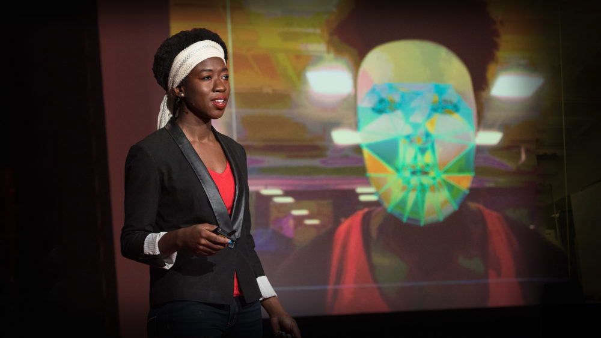

A mulher lutando contra o preconceito em algoritimos
A poeta do código também é uma ativista digital. Joy Buolamwini, cientista da computação do MIT (Massachusetts Institute of Technology), trabalha para que os softwares de reconhecimento facial também sejam eficientes para mulheres e homens de pele escura.
Joy nasceu no Canadá e cresceu nos Estados Unidos, mas tem ascendência africana, do país de Gana. Como mulher negra, desenvolveu um olhar crítico para a tecnologia que, muitas vezes, falta em equipes predominantemente formada por homens brancas. Tal diferencial possibilitou a criação de um acordo internacional que regula o uso da tecnologia artificial de reconhecimento facial.
Alguns Marcos de Seu Trabalho
- 2017 - In 2017, Buolamwini was awarded the grand prize in the professional category in the Search for Hidden Figures contest, tied to the release of the film Hidden Figures in December 2016.[39] The contest, sponsored by PepsiCo and 21st Century Fox, was intended to "help uncover the next generation of female leaders in science, technology, engineering and math,"[40] and attracted 7,300 submissions from young women across the United States.
- 2018 - Buolamwini delivered a TEDx talk at Beacon Street entitled How I'm fighting bias in algorithms.[41][42][43] In 2018 she appeared on TED Radio Hour.[44] She was featured on Amy Poehler's Smart Girls in 2018.[3] Fast Company magazine listed her as one of four "design heroes who are defending democracy online".[45] She was listed as one of BBC's 100 Women in 2018.
- 2019 - In 2019, Buolamwini was listed in Fortune Magazine's 2019 list of the World's Greatest Leaders. The magazine also termed her "the conscience of the A.I. revolution".[47] She also made the inaugural Time 100 Next list in 2019. [48] In 2020, Joy Buolamwini featured in a Levi's woman empowerment campaign for 8 March International Women's Day.[49] She was also featured in the documentary Coded Bias.